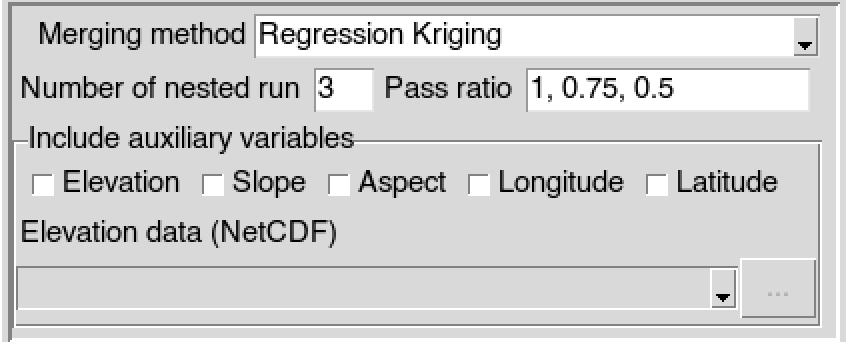
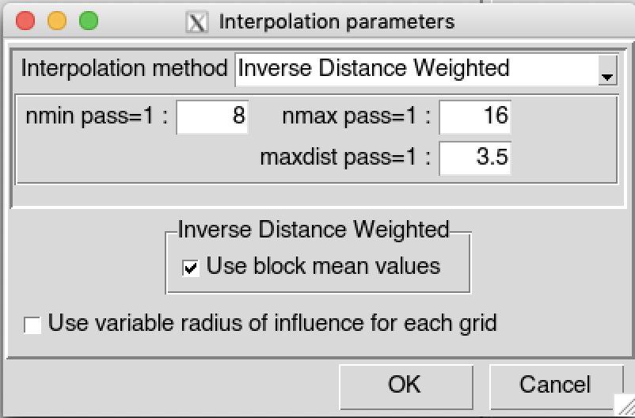
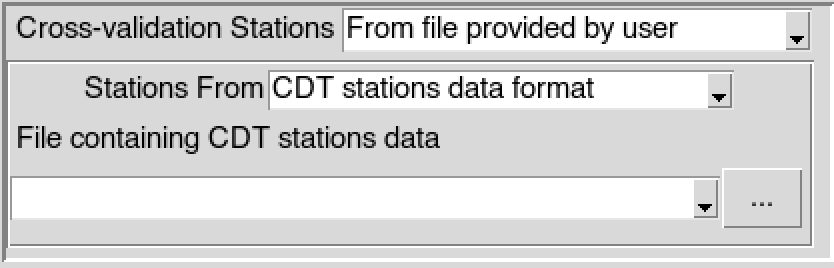
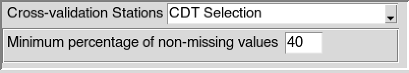

Merging - Cross-Validation
CDT offers a Leave-One-Out Cross-Validation (LOOCV) to evaluate the performance of the method used for the interpolation and merging, or the parameters used to perform the merging. LOOCV can be a time-consuming process and computationally expensive with a large datasets. LOOCV is consisting of excluding one observation successively and performing the merging with the remaining observations to predict the value at the excluded observation location, then the excluded observation is put back to the observations data.
Climate data
The menu allows to perform a leave-one-out cross-validation to evaluate the performance of the interpolation and merging method, or the parameters used to perform the merging, where <name of the climate variable> is one of rainfall, temperature, relative humidity, radiation and pressure data.
Select the temporal resolution of the data. Available temporal resolution are: daily, pentad, dekadal and monthly data.
Set the start and end date of the period over which the LOOCV will be performed. See setting date range for more details.
Select the file containing the station data (in CDT station data format) to use from the drop down list if it is already loaded, or open it through
 .
.Type the full path to the folder containing the netCDF files or browse it from the button
on the right.Provide a netCDF sample file and change the filename format of the netCDF file through the netCDF settings dialog by clicking on the button.
Type the full path to the folder to save the output, or use the browse button
.Select the method to use to merge the data. CDT has 4 methods to compute the bias coefficients: Simple Bias Adjustment, Regression Kriging, Cressman Scheme and Barnes Scheme. See CDT merging methods page for more information.
In case of Regression Kriging, you have to provide the auxiliaries variables to be used. An frame is displayed allowing you to select the variables to use. You can use one or more auxiliaries variables. Available choices are elevation, slope, aspect, longitude and latitude data. You include one of the elevation, slope or aspect data as auxiliary variable, you will need to provide the elevation data (in netCDF format). The slope and aspect are computed from the digital elevation model you provided.

Specify the number of nested run to be performed, then edit the pass ratio for each run separated by comma. The number of run must be equal to the length of the pass ratio. Refer to the CDT merging nested run page for more information
Click on the button to open the interpolation dialog to select the interpolation method to be used and set the all parameters for the interpolation.

By default, CDT uses a fixed search radius defined by maxdist, which means that all the stations used to interpolate a grid node are selected within a radius maxdist. CDT can allow you to select the stations used to interpolate a grid node by only providing nmin and nmax; this implies that maxdist is variable, maxdist is small over the region with high density of station and becomes large over the region with sparse stations. Check
 Use variable radius of influence for each grid to use non fixed maxdist. See variable search radius for more details.
Use variable radius of influence for each grid to use non fixed maxdist. See variable search radius for more details.In case of rainfall data, check
Apply Rain-no-Rain Mask box to create a mask over the region there is no observed rain from the stations. See the method used for the application of a rain-no-rain mask for more details. Specify the threshold to define the a no rain value, below this threshold the rainfall is set to zero and one above for the mask. To prevent a steep gradient in the interpolated mask, check Smooth Rain-no-Rain Mask box to apply a spatial smoothing in the interpolated mask.Select the way the stations to be used for the cross-validation will be selected. CDT provides 3 ways to select the stations: All stations from the input, From file provided by user and CDT Selection.
- All stations from the input: all the stations in the input data provided in (3) will be used to carry out the LOOCV.
- From file provided by user: you can provide the file containing the stations to be used. The stations can be obtained from a CDT stations data format or CDT coordinates file.
 - CDT Selection: the stations will be selected from the input data provided in (3) in such a way that they are spatially well distributed and contain a minimum percentage (to be specified by the user) of non missing observations over the period to perform the LOOCV.

Click on the button  to start the LOOCV.
to start the LOOCV.
A folder named CrossValidation_<name of climate variable>_Data_<start date>_<end date> will be created under the folder you provided to save the outputs. It contains two files, STATIONS_DATA.csv containing the stations observation data and CROSS-VALIDATION_DATA.csv containing the predicted values from LOOCV.
Wind data
The menu allows to perform a leave-one-out cross-validation to evaluate the performance of the interpolation and merging method, or the parameters used to perform the merging for wind data.
Select the temporal resolution of the data. Available temporal resolution are: daily, pentad, dekadal and monthly data.
Set the start and end date of the period over which the LOOCV will be performed. See setting date range for more details.
Select the wind variables to be used: wind Speed only or the U and V components of the wind data.
If the wind speed is selected in (3), provide the file containing the wind speed data (in CDT station data format) to use. In case of U and V components, you have to provide the files containing the station data for U-component and V-component of the wind data (in CDT station data format). You can select the files from the drop down list if it is already loaded, or open it through
.
- If the wind speed is selected in (3), type the full path to the folder containing the netCDF files or browse it from the button on the right. In case of U and V components, provide the full path to the folder containing the netCDF wind data files; if the U and V components are stored in separate files, uncheck U and V components are in one NetCDF file and provide the full paths to the folder containing the netCDF U-component and V-component files.
Provide a netCDF sample file and change the filename format of the netCDF file through the netCDF settings dialog by clicking on the button.
Type the full path to the folder to save the output, or use the browse button
.Select the method to use to merge the data. CDT has 4 methods to compute the bias coefficients: Simple Bias Adjustment, Regression Kriging, Cressman Scheme and Barnes Scheme. See CDT merging methods page for more information.
In case of Regression Kriging, you have to provide the auxiliaries variables to be used. An frame is displayed allowing you to select the variables to use. You can use one or more auxiliaries variables. Available choices are elevation, slope, aspect, longitude and latitude data. You include one of the elevation, slope or aspect data as auxiliary variable, you will need to provide the elevation data (in netCDF format). The slope and aspect are computed from the digital elevation model you provided.
Specify the number of nested run to be performed, then edit the pass ratio for each run separated by comma. The number of run must be equal to the length of the pass ratio. Refer to the CDT merging nested run page for more information
Click on the button to open the interpolation dialog to select the interpolation method to be used and set the all parameters for the interpolation.
By default, CDT uses a fixed search radius defined by maxdist, which means that all the stations used to interpolate a grid node are selected within a radius maxdist. CDT can allow you to select the stations used to interpolate a grid node by only providing nmin and nmax; this implies that maxdist is variable, maxdist is small over the region with high density of station and becomes large over the region with sparse stations. Check
Use variable radius of influence for each grid to use non fixed maxdist. See variable search radius for more details.Select the way the stations to be used for the cross-validation will be selected. CDT provides 3 ways to select the stations: All stations from the input, From file provided by user and CDT Selection.
- All stations from the input: all the stations in the input data provided in (4) will be used to carry out the LOOCV.
- From file provided by user: you can provide the file containing the stations to be used. The stations can be obtained from a CDT stations data format or CDT coordinates file.
- CDT Selection: the stations will be selected from the input data provided in (4) in such a way that they are spatially well distributed and contain a minimum percentage (to be specified by the user) of non missing observations over the period to perform the LOOCV.
Click on the button to start the LOOCV.
A folder named CrossValidation_Wind_Data_<start date>_<end date> will be created under the folder you provided to save the outputs. If the wind speed is selected in (3), this folder contains two files, STATIONS_DATA_wspd.csv containing the wind speed observation data and CROSS-VALIDATION_DATA_wspd.csv containing the predicted wind speed values from LOOCV. In case of U and V components, the folder contains 4 files STATIONS_DATA_U.csv containing the zonal velocity from station observations, STATIONS_DATA_V.csv containing the meridional velocity from station observations, CROSS-VALIDATION_DATA_U.csv containing the predicted zonal velocity and CROSS-VALIDATION_DATA_V.csv containing the predicted meridional velocity.